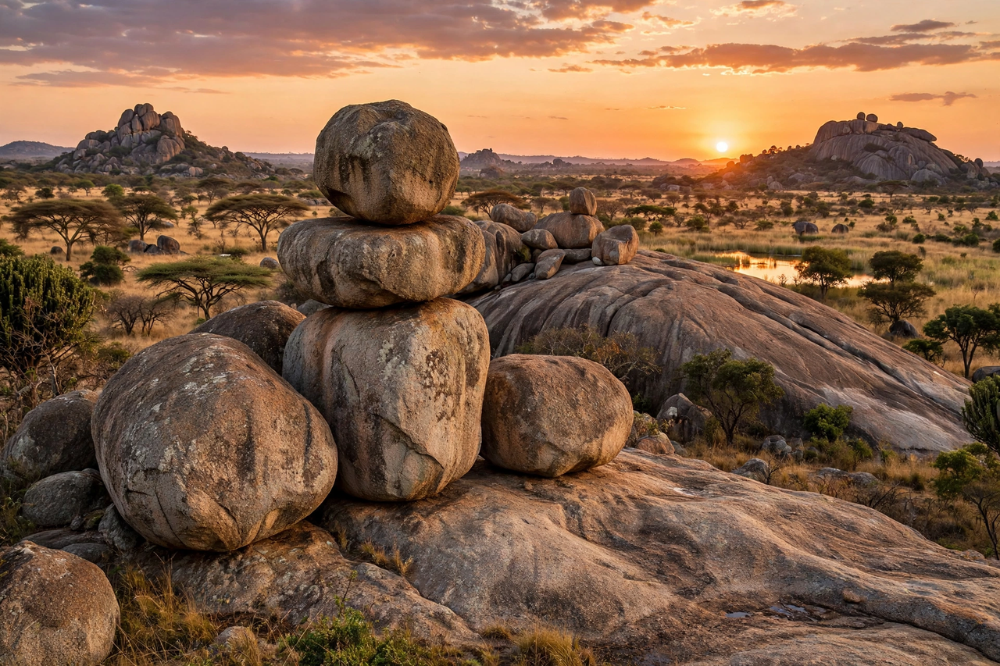

| Matobo National Park | |
|---|---|
 Balancing rocks of the Matobo Hills | |
| Location | Matabeleland South, Zimbabwe |
| Area | 424 km² (164 sq mi) |
| Established | 1926 |
| Status | UNESCO World Heritage Site (2003) |
Matobo National Park is Zimbabwe's oldest national park, occupying the core of the Matobo Hills south of Bulawayo. The hills are a dramatic landscape of granite kopjes — domes, spires and balancing rocks weathered from a batholith some two billion years old — interspersed with wooded valleys. The park was inscribed by UNESCO in 2003 as a cultural landscape.
The park is an Intensive Protection Zone for rhinoceros, holding significant populations of both black and white rhinos that can be tracked on foot with armed guides. Other wildlife includes leopards (at notably high density), giraffe, zebra, sable antelope and abundant birdlife, including the world's largest concentration of breeding black eagles.
The Matobo Hills have been spiritually significant for millennia. San (Bushman) hunter-gatherers painted vivid rock art — among the finest in Africa — in caves and shelters throughout the hills, and the area remains a centre of the Mwari (Mlimo) rain-shrine cult. Cecil John Rhodes, who claimed the hills as his burial place, is buried at the summit called World's View (Malindidzimu), alongside the Shangani Patrol memorial. Ndebele kings, including Mzilikazi, are also buried in the hills.